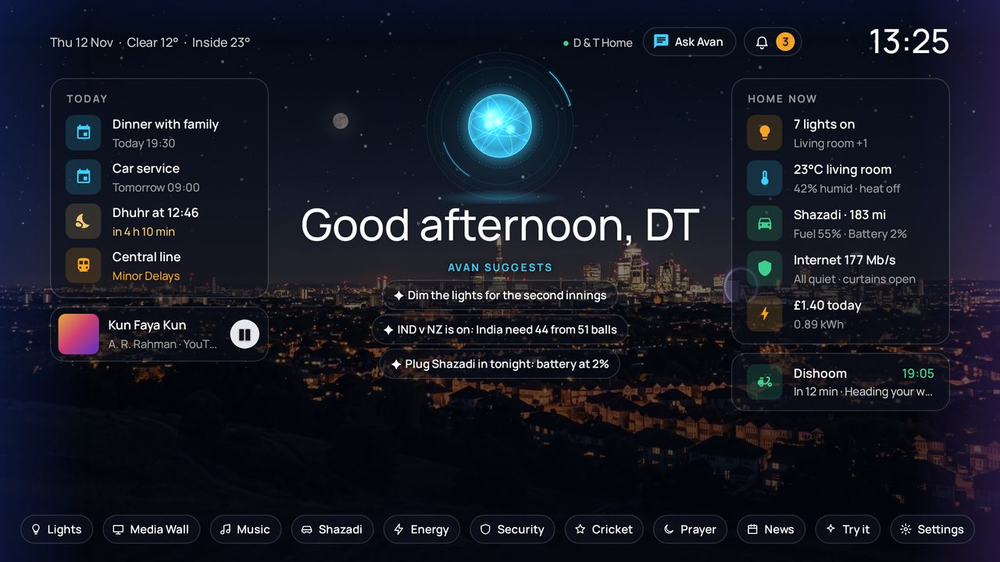
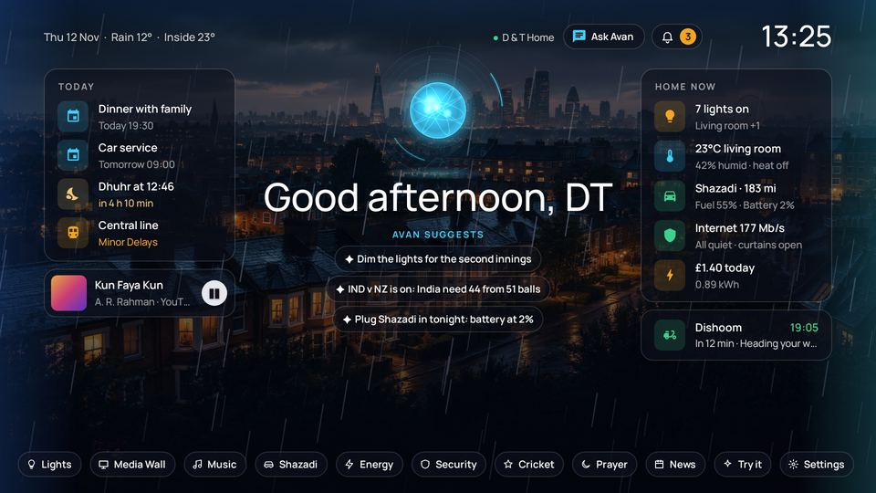
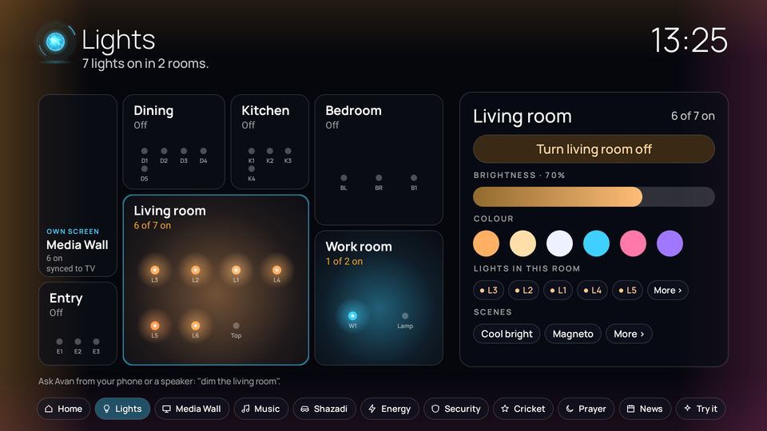
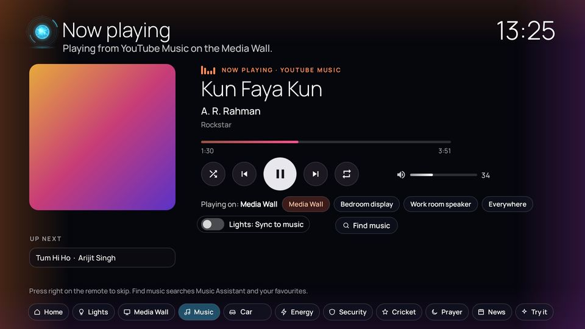
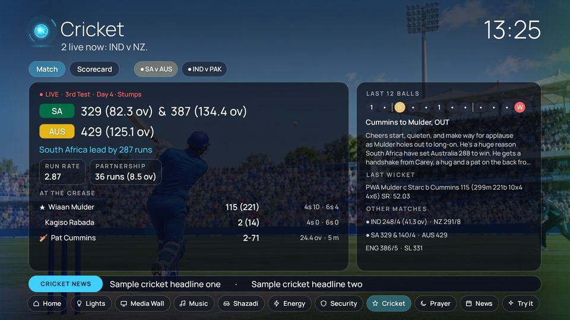
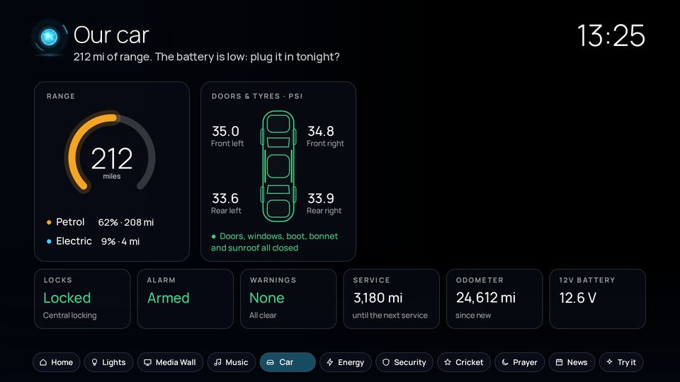
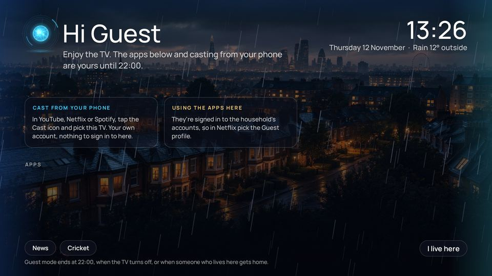
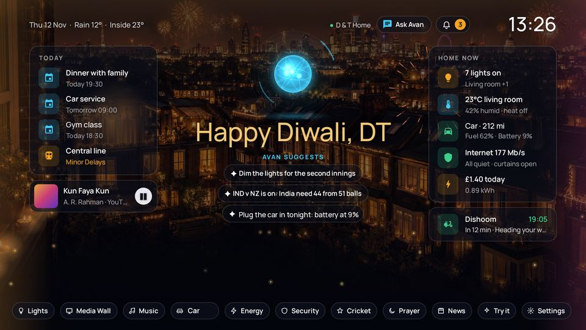

This is the home screen on my living-room TV. I replaced Google TV's home with my own: it knows the weather, who's home, what's on today, the cricket, the music and the house. I'm not a full-time developer: an AI coding agent wrote the code while I described what I wanted and tested every step on the real TV. Here's what it does, what you need, how the pieces fit, the steps, and the prompts I'd start with.
Real screenshots from the app, with made-up data.







Home Assistant already knows where each person is from the Home Assistant app on their phone. Location alone is slow, so it also uses the phone's Wi-Fi connection: the moment your phone joins the home Wi-Fi, you count as home.
The greeting follows that: "Good evening, DT" when we're both in, just one name when one of us is, and "Hi Guest" when nobody who lives here is home.
If the TV wakes up while we're both out, our phones get an "Is that you?" message. One tap and the TV opens our home screen. If nobody taps, the TV stays in guest mode and I get a message that it woke while we were away.
When nobody who lives here is home, the TV opens the guest home: the clock, the weather, news, cricket, casting from their phone and the apps. Nothing from the house: no names, calendar, car, lights, energy, security or music history, and the assistant won't share or control anything.
A guest can scan a QR code to ask for a one-time PIN. I approve it on my phone; it works once, expires after 30 minutes and locks for 5 minutes after three wrong tries.
We each have our own household PIN behind an "I live here" button, in case a phone isn't handy. PINs are checked on the home server, never stored on the TV.
Guest mode ends by itself at a set time, when the TV turns off, or as soon as one of us gets home, and whatever's playing keeps playing.
Tip: apps stay signed in to your accounts, so hide the ones guests shouldn't open (I hide the Play Store and Settings) and tell them to pick the Guest profile in Netflix.
The TV box plugs into a Philips Hue Play HDMI Sync Box, and the Sync Box into the TV. The box reads the colours at the edges of the picture and lights the Hue Play bars behind the TV to match, on its own.
So the launcher is designed for it: every screen paints its own colours along the edges, and the opening animation throws colour to the corners, so even the menus light up the room.
When my assistant starts music on the TV, it switches the Sync Box to music mode, so the lights pulse with the song. When it starts a video (YouTube, Netflix), it switches back to video mode. It only changes the mode, only when the box is on, and never changes the HDMI input.
The Music screen has a "Lights: Sync to music" switch, and the Media Wall screen shows the box's mode and intensity.
Everything goes through Home Assistant: its Philips Hue integration for the lights and scenes (the Lights screen), its Hue Sync Box integration for the sync mode, and Music Assistant for music on the TV and every speaker. The TV asks the home server; the server checks the request is allowed and calls Home Assistant.
Mine is a Chromecast with Google TV (4K). A Google TV Streamer, an Nvidia Shield or a TV with Google TV built in works too. Nothing is flashed or rooted: it's a normal app that you install yourself, and Google TV stays underneath.
Any PC or Mac with adb (Android's free install tool). The app can be built on your computer with Android Studio, or in the cloud with GitHub Actions if your computer is small. Mine builds on GitHub and installs from my home server.
The time, apps and weather loops work without it. For lights, music, the car, energy and who's home, you need Home Assistant, plus a small server between it and the TV (step 6). I use my assistant, Avan, for that: part 1 shows how to build it.
Hue lights for the Lights screen, and a Hue Play HDMI Sync Box with Hue Play light bars if you want the room to glow with the TV.
You describe each screen in plain words, it writes the Kotlin and the tests, you install it on the TV and check. The prompts below are where I'd start.
Skill you do need: patience to test every step on the real TV, with the remote in your hand.
| Item | Cost |
|---|---|
| Google TV boxIf your TV doesn't have Google TV already | £30 – £100 once |
| Android Studio, adb, KotlinAll free | Free |
| Builds in the cloudGitHub Actions; the free minutes cover a hobby project. Set a spending limit | Free, or a few $ |
| Home AssistantFree to run yourself | Free |
| Philips Hue Sync Box and light barsOptional, for lights that follow the screen | About £250 – £400 |
| Weather video loopsFree stock clips, or make your own with an AI video tool | Free – a few £ |
| Cricket and newsFree public feeds | Free |
The one rule that makes this safe: the TV never holds your Home Assistant token. A guest with the remote can only ever see and do what your server allows.
Each step works on the real TV before you start the next.
On the TV: Settings → System → About, press OK on Android TV OS build seven times. Then in Developer options turn on Wireless debugging. Pair from your computer once, and you can install apps over Wi-Fi:
adb pair 192.168.1.50:37000 # the code shown on the TV
adb connect 192.168.1.50:5555
adb install -r launcher.apkA Kotlin app for Android TV: the time, a greeting and a row of your installed apps with their own banners. Get it on the TV and open it from the apps list. Use the starter prompt below.
Google TV doesn't let you choose another home screen. The way round it is an accessibility service in your app that catches the Home button and opens yours (apps like Projectivy do the same). You turn it on once in the TV's accessibility settings.
Don't disable Google's own launcher with adb: the remote's YouTube button and Quick Settings stop working, and an update can undo it. A Google update can also switch the accessibility service off, so have the app check after each update.
Design at 1920×1080 with big text and a clear focus ring on whatever's selected. One bar of screens along the bottom. OK selects, Back closes. Aim for a smooth 60 fps on a cheap box: no live blur, one video at a time.
Short (about 8 s) seamless video loops for clear, cloudy, rain, storm, snow, fog and night, played on the box's hardware decoder. Keep them on the TV, downloaded once, not inside the app, so updates stay small. Pick the loop from Home Assistant's weather.
On your home server, add an endpoint that reads Home Assistant and sends the TV only what it may show, as one live stream. Pair the TV with a code it shows, approved on your phone. It gets its own key, which you can revoke on its own.
Who's home from the phones, the greeting, the guest home, one-time guest PINs and household PINs, all decided on the server. See guest mode above.
A skippable opening animation, festival looks on the day, and a Try it screen that previews every weather and festival so you can show it off on a sunny day.
After every change, install it and check on the TV. adb can take screenshots and short recordings, so the agent can look for itself:
adb exec-out screencap -p > home.png
adb shell screenrecord --time-limit 10 /sdcard/clip.mp4My tip: add a sample-data mode that fills the screens with made-up plans and names. Use it for every screenshot you share.
1. No keys on the TV. Your server holds the Home Assistant token; the TV has its own revocable key.
2. Nothing on screen unless asked. Your assistant only puts things on the TV when you ask.
3. Keep private things off the TV. Health reminders, money, email and your address never go to the TV.
4. Guests see guest things. Decide on the server what a guest may see, not in the app.
5. Locks and the alarm are never on the remote.
6. Sample data for screenshots. Blur anything real before you post.
One prompt for the whole system. Paste it into your AI coding agent: it asks you about your TV, your home, your assistant (if you have one), guests, Hue and privacy first, then plans and builds it step by step. No assistant yet? It builds a small server just for the TV.
You are going to help me build my own TV home screen (an Android TV / Google TV launcher) that knows my home, like the "Avan TV" in this guide: https://dilgrover.github.io/avan-tv/
Before you write any code, interview me. Ask the questions below a few at a time, wait for my answers, and skip anything I say I don't have. Then write a short plan (what you'll build, in what order, what you need from me) and wait for my OK.
1. The TV
- Which box or TV is it (Chromecast with Google TV, Google TV Streamer, Nvidia Shield, a TV with Google TV built in)? Android version?
- Is developer mode and Wireless debugging on? Can my computer reach it with adb?
2. My assistant
- Do I already have my own AI assistant (an "Avan" or "Jarvis") running at home, with an API the TV could talk to? Where does it run?
- If yes: build the TV's server side into it. If no: build a small, separate home-server service just for the TV, and keep "Ask the assistant" out until I add one.
3. Home Assistant
- Do I have Home Assistant? Its address, and can you create a long-lived token for the server (never for the TV)?
- Which of these do I have, and what are their entity names: lights (Philips Hue or other), Philips Hue Play HDMI Sync Box, Music Assistant and my speakers, the car, energy meter, internet speed, weather, door and alarm sensors, calendar?
4. Who's home and the greeting
- Who lives here, and what should the greeting call each of us and all of us together?
- Do we have the Home Assistant app on our phones, with location and the Wi-Fi connection sensor on?
- What should happen when the TV wakes and nobody's home ("Is that you?" on our phones, a household PIN, a message to me)?
5. Guest mode
- When should guest mode end (a time, the TV turning off, one of us getting home)?
- Which apps should guests not see? Which screens may they use (news, cricket)?
- Guest PINs: one-time, approved on my phone, how long they last.
6. Screens and look
- Which screens do I want: lights, music, media wall (TV, Sync Box, soundbar), car, energy, security, cricket, news, settings, anything else?
- Weather video loops behind the home screen: do I have clips, or should you use placeholders I replace later?
- Festivals and special days to dress up for; an accent colour.
7. Privacy rules
- What must never appear on the TV (health, money, email, my address, a real Wi-Fi password)? What may guests never see?
- Locks and the alarm stay off the remote. Anything else that must always ask me first?
8. Building and testing
- Build on my computer with Android Studio, or in the cloud with GitHub Actions? Where should the code live (a private repo)?
- Can you install on the TV yourself with adb, and take screenshots to check your work?
Rules while you build:
- The TV never holds my Home Assistant token. The server decides what the TV may see and do, including everything for guests.
- Pair the TV with a code it shows that I approve on my phone; it gets its own key that I can revoke.
- Kotlin, Jetpack Compose for TV, 1920x1080, everything usable with the remote's D-pad. Smooth on a cheap box: no live blur, one video at a time.
- Build in small steps: each one installed and checked on the real TV (adb screenshots) before the next. Write tests for the server.
- Add a sample-data mode for screenshots, so my real data never has to be on screen in a recording.
- Keep a plain-English GUIDE.md: what it does, how to install it, every setting, and what's still to do.If you'd rather drive it yourself: paste these in order, one when the last step works on your TV. Change the bits in brackets.
1 · Starter: the app and the Home button
I want to build my own home screen (launcher) for my Google TV / Android TV box, called [NAME]. It's an app, not a new system: Google TV stays installed underneath. Build it in small steps, each one working and tested before the next. Kotlin, Jetpack Compose for TV, 1920x1080, everything usable with the remote's D-pad (clear focus rings, OK selects, Back closes). Keep a plain-English GUIDE.md of what it does and how to install it.
Step 1 now: a launcher app that shows the time, a greeting and a row of my installed TV apps (with their own banners), declared as a TV launcher. Show me how to build the APK and install it on my TV over Wireless debugging with adb, and how to open it.
Step 2: make the remote's Home button open it on Google TV, using an accessibility service that catches Home (Google TV doesn't let you pick a default launcher). Don't disable Google's launcher. Check after each update and on boot that Home still opens mine, and tell me if not.
Ask me questions before you start if anything is unclear.2 · Connect your home, safely
Next step for my TV launcher: connect it to my home, safely.
- The TV must never hold my Home Assistant token. Add a small endpoint on my home server that reads Home Assistant and sends the TV only what it may show, as one live state stream (lights, music, weather, who's home).
- Pairing: the TV shows a short code; I approve it on my phone; the TV gets its own key that I can revoke on its own. Nothing typed with the remote.
- Anything that changes the house (lights, scenes, music) goes through the server, which checks it's allowed. Locks and the alarm: never from the TV.
- Never send health reminders, money, email or my address to the TV.
Write tests for the endpoint and for what the TV is allowed to see.3 · The home screen and the screens
Next step for my TV launcher: the home screen and the screens.
Home: greeting by who's home, the time, a Today card (calendar, next event, transport), a Home now card (lights on, room temperature, car, internet, energy), a music mini-player, and a bottom bar of screens. Behind it, a short seamless video loop for the weather right now (rain, clear, cloudy, night, snow), played on the hardware decoder and stored on the TV, not in the app.
Then one screen at a time, each tested on the real TV before the next: Lights (rooms, brightness, scenes), Music (now playing through Music Assistant, pick a speaker), Cricket (live score from a public feed), and Settings. Keep 60 fps: no live blur, one video at a time.
Add a sample-data mode, so I can take screenshots without my real data.4 · Guests and polish
Next step for my TV launcher: guests, and polish.
- Guest view: when someone who doesn't live here uses the TV, show only the apps, casting and a few safe screens (news, cricket). Nothing about the house or the family. A PIN screen to switch back, ending by itself at a set time or when someone who lives here gets home.
- An opening animation when the TV turns on (skippable, under 2.5 s).
- Festival looks on the day (Diwali, Eid, Christmas...), and a "Try it" screen that previews every weather, festival and guest view.
- An "internet is down" state that still works for the house.
Test each on the real TV over adb, with screenshots, before moving on.Follow @dilgrover for the next parts. Questions? Comment on the reel.
Built and tested on my own TV. Yours will differ: test each step, and keep your keys safe. Google TV, Android TV and Chromecast are Google's trademarks; this is a personal project, not affiliated with Google.